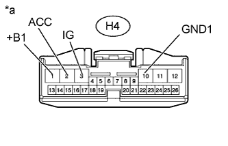
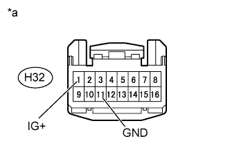

AIR CONDITIONING SYSTEM > Air Conditioning Control Panel Circuit |
| 1.CHECK VEHICLE TYPE |
Check vehicle type.
| Result | Proceed to |
| w/ Navigation system | A |
| w/o Navigation system | B |
|
| ||||
| A | |
| 2.CHECK HARNESS AND CONNECTOR (DISPLAY AND NAVIGATION MODULE DISPLAY - BATTERY AND BODY GROUND) |
|  |
Disconnect the H4 display connector.
Measure the voltage according to the value(s) in the table below.
| Tester Connection | Switch Condition | Specified Condition |
| H4-1 (+B1) - H4-10 (GND1) | Always | 11 to 14 V |
| H4-3 (IG) - H4-10 (GND1) | Engine switch off | Below 1 V |
| H4-3 (IG) - H4-10 (GND1) | Engine switch on (IG) | 11 to 14 V |
| H4-2 (ACC) - H4-10 (GND1) | Engine switch on (ACC) | 11 to 14 V |
Measure the resistance according to the value(s) in the table below.
| Tester Connection | Condition | Specified Condition |
| H4-10 (GND1) - Body ground | Always | Below 1 Ω |
| *a | Front view of wire harness connector (to Display and Navigation Module Display) |
|
| ||||
| OK | |
| 3.REPLACE DISPLAY AND NAVIGATION MODULE DISPLAY |
Replace the display and navigation module display with a new or normally functioning one (Click here).
Operate the display and navigation module display to check that it functions properly.
|
| ||||
| OK | ||
| ||
| 4.CHECK HARNESS AND CONNECTOR (AIR CONDITIONING CONTROL - AIR CONDITIONING AMPLIFIER) |
Disconnect the G13 amplifier connector.
Disconnect the H32 control connector.
Measure the resistance according to the value(s) in the table below.
| Tester Connection | Condition | Specified Condition |
| H32-10 (LIN1) - G13-37 (LIN1) | Always | Below 1 Ω |
| H32-10 (LIN1) - Body ground | Always | 10 kΩ or higher |
|
| ||||
| OK | |
| 5.CHECK HARNESS AND CONNECTOR (AIR CONDITIONING CONTROL - BATTERY AND BODY GROUND) |
|  |
Disconnect the H32 control connector.
Measure the voltage according to the value(s) in the table below.
| Tester Connection | Switch Condition | Specified Condition |
| H32-1 (IG+) - H32-11 (GND) | Engine switch off | Below 1 V |
| H32-1 (IG+) - H32-11 (GND) | Engine switch on (IG) | 11 to 14 V |
Measure the resistance according to the value(s) in the table below.
| Tester Connection | Condition | Specified Condition |
| H32-11 (GND) - Body ground | Always | Below 1 Ω |
| *a | Front view of wire harness connector (to Air Conditioning Control Assembly) |
|
| ||||
| OK | |
| 6.CHECK HARNESS AND CONNECTOR (AIR CONDITIONING CONTROL - ACCESSORY METER) |
Disconnect the H32 control connector.
Disconnect the H26 meter connector.
Measure the resistance according to the value(s) in the table below.
| Tester Connection | Condition | Specified Condition |
| H32-5 (SWA) - H26-4 (SW1) | Always | Below 1 Ω |
| H32-12 (E) - H26-7 (E) | Always | Below 1 Ω |
| H32-4 (SWB) - H26-5 (SW2) | Always | Below 1 Ω |
| H32-13 (SWC) - H26-6 (SW3) | Always | Below 1 Ω |
| H32-5 (SWA) - Body ground | Always | 10 kΩ or higher |
| H32-12 (E) - Body ground | Always | 10 kΩ or higher |
| H32-4 (SWB) - Body ground | Always | 10 kΩ or higher |
| H32-13 (SWC) - Body ground | Always | 10 kΩ or higher |
|
| ||||
| OK | |
| 7.REPLACE HEATER CONTROL SWITCH BOARD |
Replace the heater control switch board with a new or normally functioning one (Click here).
Operate the air conditioning control assembly to check that it functions properly.
|
| ||||
| OK | ||
| ||
| 8.REPLACE ACCESSORY METER ASSEMBLY |
Replace the accessory meter assembly with a new or normally functioning one (Click here).
Operate the accessory meter assembly to check that it functions properly.
|
| ||||
| OK | ||
| ||